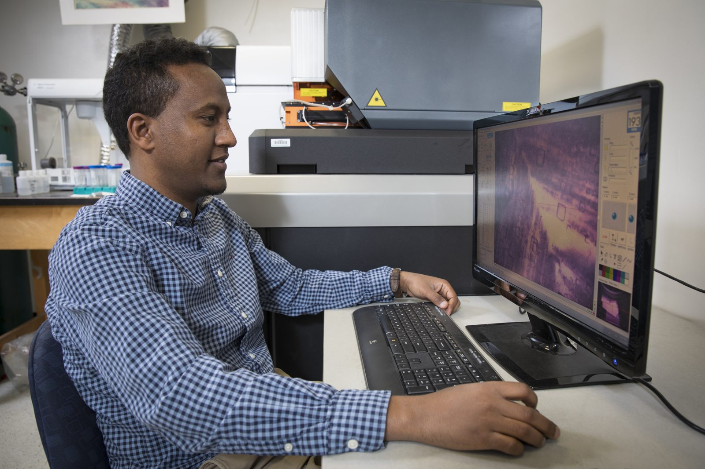

Ancient Seawater & Earth’s Climate
Low-temperature and isotope geochemistry · Princeton University
I reconstruct the chemistry of ancient seawater to understand how Earth’s oceans, climate, and carbon cycle have changed over billions of years — reading the record from microscopic droplets of seawater trapped in salt crystals hundreds of millions of years old, and from the chemistry of Antarctic ice.